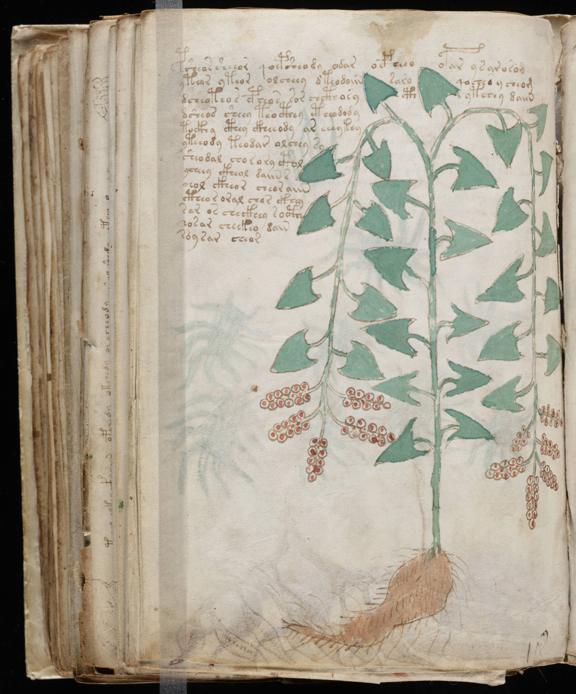

f96v
1psheoas sheeor qoepsheody odar ocpheoopar ysarasod2ytear yteor olcheey dteodoiinsaroqoches ycheom3dcheoteos cpheos sor chcthosycthytchey daiin4dsheos sheey teo cthy ctheodody5tockhy cthey ckheeody ar cheykey6yteeody teodar alchey sy7sheodal chor ory ctol8ycheey ckheol daiin s9eol ckheor cheor aiin10ctheor oral chor ckhey11sar os checkhey socthh12sosar cheekeo dain13soy sar cheor
